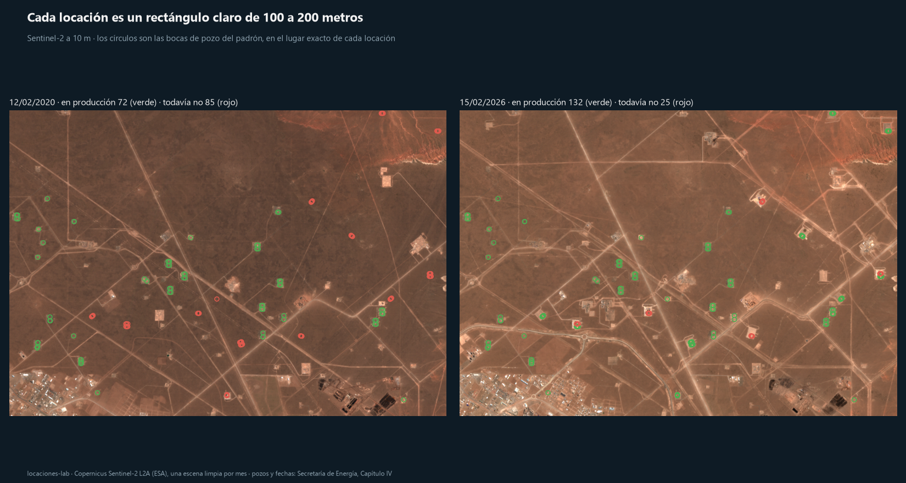
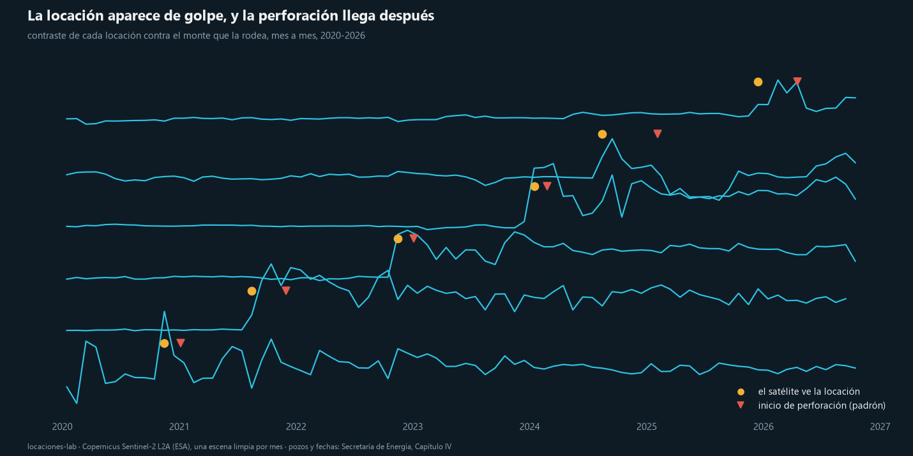
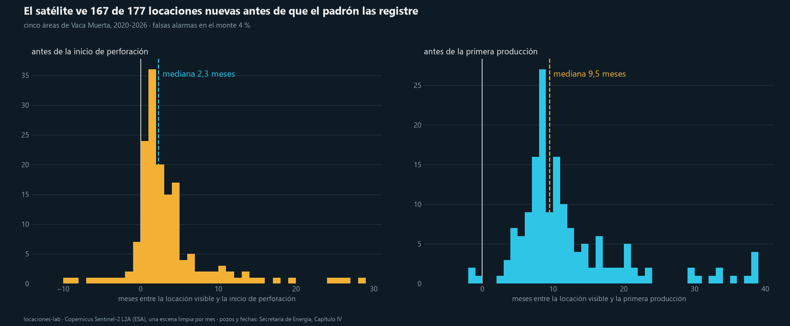
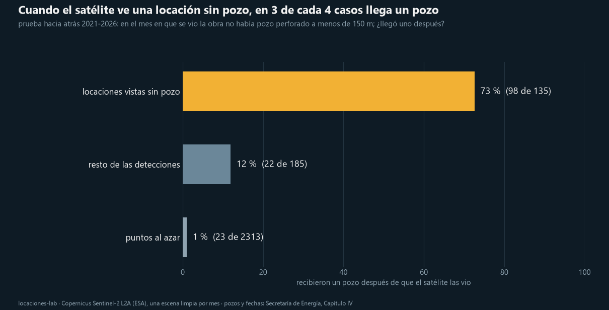

Vaca Muerta desde el satélite
Una imagen gratis de Sentinel-2 por mes desde 2020 sobre cinco áreas de la cuenca Neuquina, contra los pozos del Capítulo IV de la Secretaría de Energía. ¿Se ve la actividad antes de que la registre el padrón?
73 %de las locaciones vistas sin pozo al lado recibió un pozo después (1 % en puntos al azar)
9,5 mesesantes de la primera producción, la locación ya se ve
167 de 177locaciones nuevas detectadas en cinco áreas, 2020-2026
22obras reales en octubre de 2026 sin pozo en ningún registro público
Abrir el tablero: quince ventanas de la cuenca, mes a mes, con la demanda de arena y la producción que viene por operadora.
La locación se ve, y el pozo cae encima

Aparece de golpe, y la perforación llega después


A ciegas, con prueba hacia atrás

De 28 locaciones vistas desde julio de 2025 que hoy no tienen pozo registrado, en octubre de 2026 12 tienen equipos trabajando, 8 están construidas, 2 son instalaciones con actividad, 1 es dudosa y 5 son falsas (pueblo, valle o barda). El padrón carga los pozos nuevos con unos seis meses de demora: la confirmación llega a comienzos de 2027.
Cómo
- Sentinel-2 L2A, una escena por mes con menos del 3 % de nube sobre la ventana, 82 escenas por zona.
- Contraste de cada locación contra el monte vecino; el detector a ciegas compara cada píxel con su vecindario de un kilómetro.
- Pozos, fechas de perforación y primera producción del Capítulo IV.
- Código, tests y notebooks: github.com/dpinero14/locaciones-lab.